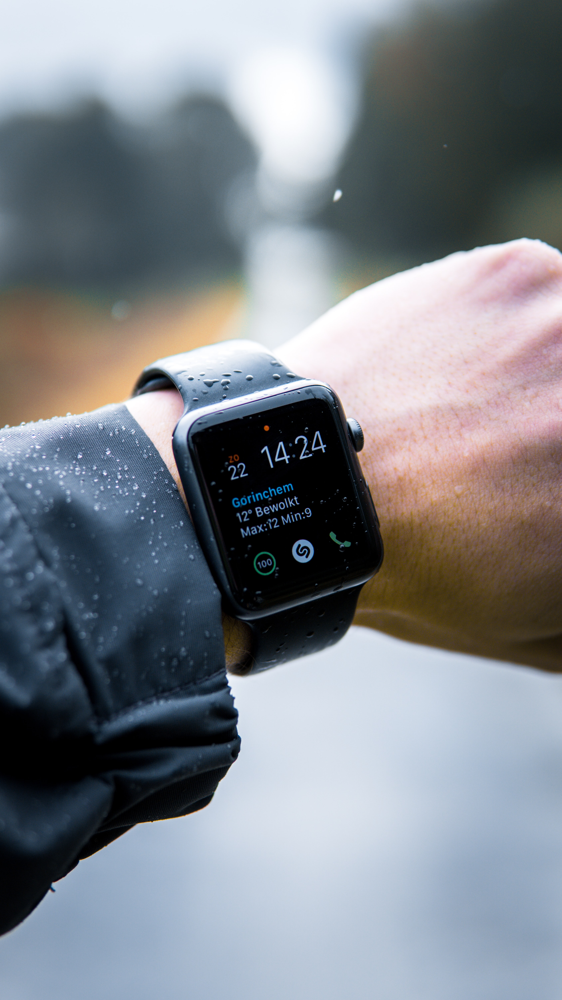

What is a smartwatch?
A smartwatch is a device that you wear on your wrist like a watch, but has many more functions. In the early days of smartwatch just display the time on a screen but as the years went on smartwatches become more alligned with smartphones. This has made it distinguishable from a normal watch.
Popular companies have taken an interest in this market especially smartphone companies like Apple, Samsung, Google and huawei
The benefits


There are many benefits of getting a smartwatch they come in different sizes to fit you liking. They work well with your phone, notifying you from your apps track your health and remind you of upcoming events, media control where you can pause, skip and replay music on your wrist rather than taking out you phone. some even have personal assistant like siri and Google assistant. Having all these on your wrist is a huge benefit to your life and wellbeing.